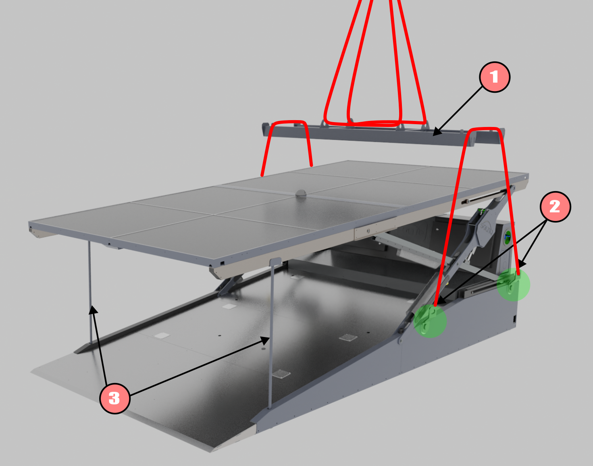
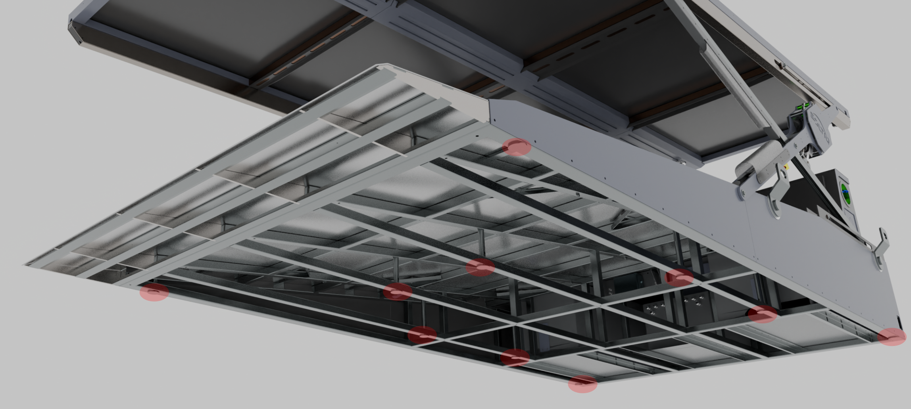
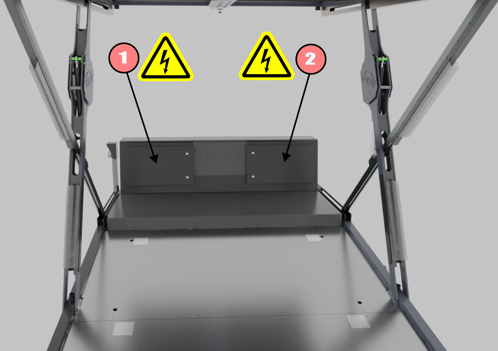
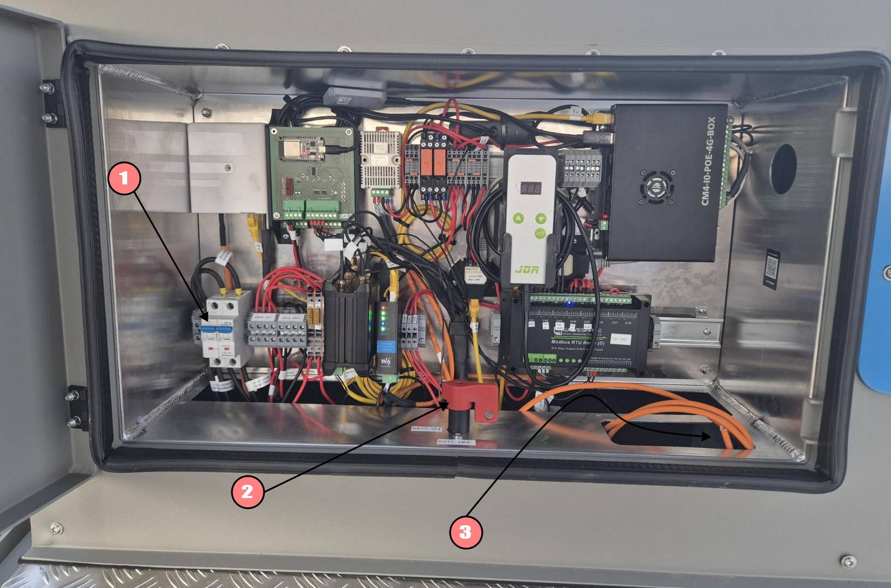
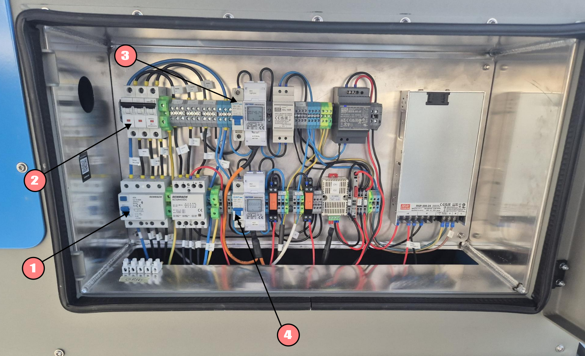
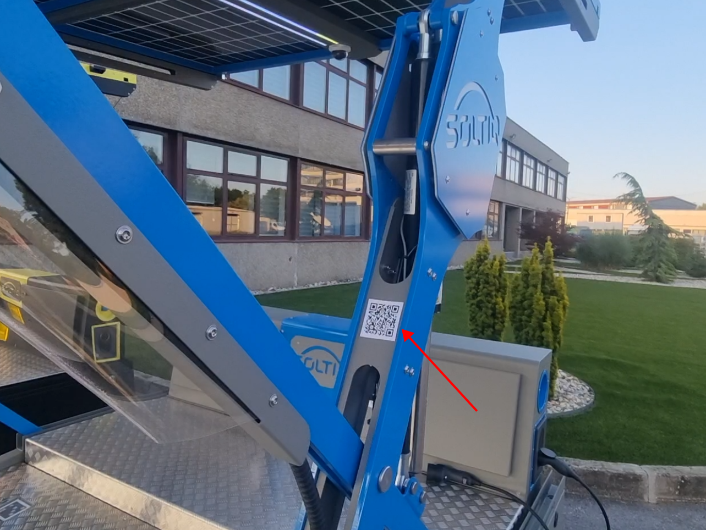
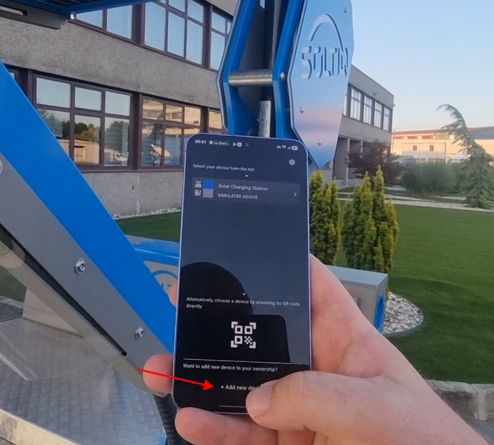
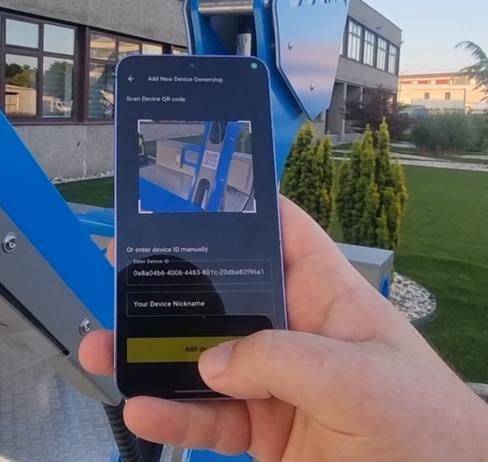
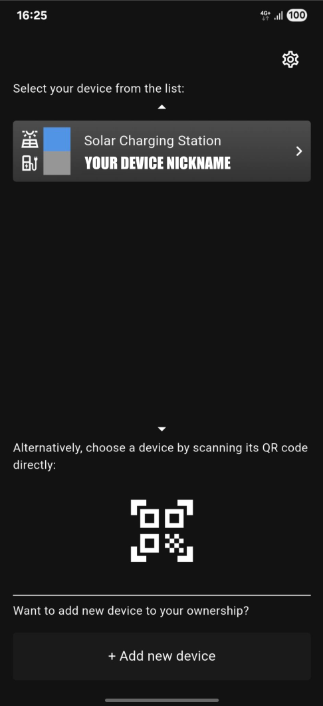

Instalacija¶
Punionica mora biti postavljena na ravnu površinu otpornu na eroziju tla uzrokovanu kišom ili drugim vremenskim utjecajima.
Punionica mora biti smještena na lokaciji gdje ne postoji mogućnost nakupljanja vode ili stvaranja lokvi.
Punionicu nije dopušteno instalirati na lokacijama izloženima jakim naletima vjetra. U suprotnom može doći do oštećenja uređaja, ozljeda ili smrtnog ishoda za ljude i životinje, kao i dodatne materijalne štete.
Podizanje i premještanje punionice¶
Punionica se smije podizati dizalicom ili kranom isključivo pomoću originalnih SOLTIQ prihvata i nosive grede.

Tijekom rukovanja punionicom obavezna je ugradnja transportnih stupova za strehu.
- SOLTIQ nosiva greda za podizanje punionice.
- SOLTIQ prihvati za podizanje.
- Transportni stupovi za strehu.
Podešavanje i niveliranje¶
Podešavanje visine i niveliranje uporišnih nogica vrši se na licu mjesta, ovisno o nagibu i podlozi instalacije.

Inicialno paljenje i podizanje strehe¶
Pregled razvodnih kutija¶
Kontrolna elektronika, kao i sigurnosni uređaji, smješteni su u "totemu" punionice, kao što je prikazano na slici:

Stavka 1 – Lijeva razvodna kutija¶

- Automatski osigurač za solarne panele.
- Glavna sklopka za internu bateriju punionice.
- Tipka za paljenje/gašenje invertera.
Razvodna kutija sadrži upravljačke jedinice, automatske osigurače solarnih panela, prekidač za inverter, LTE modem i glavnu sklopku baterije.
Za postupak paljenja i gašenja punionice vidi poglavlje 'Paljenje i gašenje punionice'.
Stavka 2 – Razvodna kutija za napajanja i trofazni sustav¶

- FID sklopka za trofazni sustav.
- Glavni automatski osigurači za trofazni sustav.
- Glavni automatski osigurač za Schuko utičnice.
- Glavni automatski osigurač za unutarnja napajanja punionice.
Za postupak paljenja i gašenja punionice vidi poglavlje 'Paljenje i gašenje punionice'.
Sekvenca paljenja punionice¶
Paljenje – Lijeva razvodna kutija:¶
- Glavna sklopka baterije
- Tipka za uključivanje invertera
- Automatski osigurač solarnih panela
Pričekajte 1 minutu da se sustav pokrene – kada gornja LED svjetla prestanu treptati bijelom/plavom bojom, sustav je uključen.
Paljenje – Desna razvodna kutija:¶
- Automatski osigurač Schuko utičnica
- Automatski osigurač internih napajanja
- Glavni automatski osigurači za trofazni sustav
- FID sklopka za trofazni sustav
Pričekajte 1 minutu da se sustav pokrene – kada gornja LED svjetla prestanu treptati bijelom/plavom bojom, sustav je uključen.
Sekvenca inicijalnog dizanja strehe¶
Inicijalno dizanje strehe provodi se pomoću ugrađenog upravljačkog kontrolera jer funkcionalnost LTE mreže nije garantirana.
Tijekom korištenja ugrađenog kontrolera, senzori pozicije škara nisu aktivni. Korisnik je odgovoran za vizualni nadzor kako bi zaustavio pokret škara na kraju vodilica.
Instalacija SIM kartice¶
SIM kartica mora imati valjan i aktiviran mobilni podatkovni paket!
Podatkovni paket ne smije biti manji od 6 GB mjesečno.
Na kraju, ukoliko je podatkovni paked validan, punionica se spaja sa serverom automatski.
Dodavanje vlasništva nad punionicom (mobilna aplikacija)¶
Kako bi korisnik dobio pristup punionici putem mobilne aplikacije, potrebno je najprije dodati punionicu na korisničku listu uređaja.
Prije nastavka, korisnik mora biti registriran i prijavljen u SOLTIQ aplikaciju.
1. Pronađite gdje se nalazi QR kod s identifikacijom uređaja¶

2. Odaberite "Add new device" u SOLTIQ aplikaciji¶

3. Skenirajte QR kod putem aplikacije¶

Odmaknite kameru od QR koda kako biste mogli unijeti nadimak uređaja.
Unesite željeni nadimak uređaja i kliknite "Add device".
4. Kraj¶
Uređaj je sada dodan na vaš korisnički račun i pojavit će se na vašem popisu uređaja.
